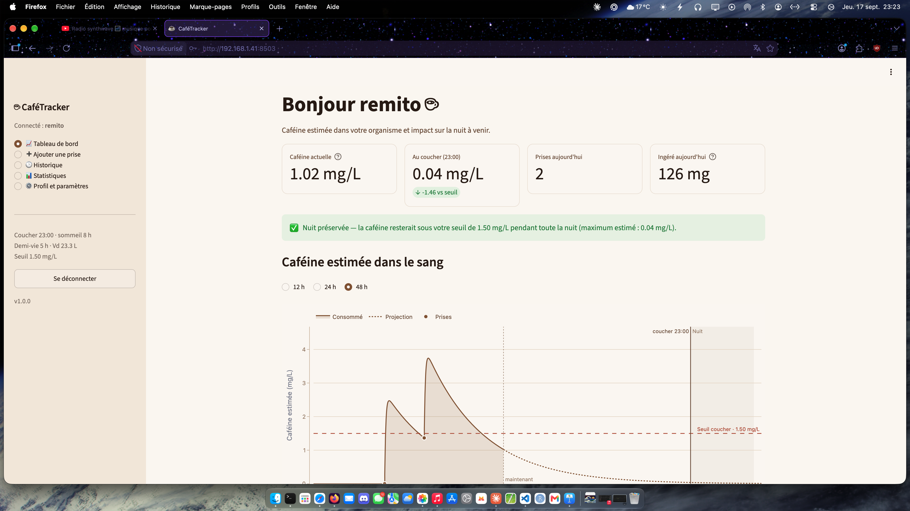

CaféTracker est une application de suivi de consommation de café qui modélise, prise après prise, le taux de caféine restant dans l'organisme. L'objectif est très concret : aider à repérer le moment à partir duquel une nouvelle tasse risque de perturber le sommeil, en se basant sur un modèle pharmacocinétique personnalisé plutôt que sur une règle générique identique pour tout le monde. L'application est multi-utilisateurs, packagée en Docker et déployée en continu sur un Raspberry Pi 5 à la maison.
L'objectif était de construire, du modèle scientifique jusqu'à l'interface, une application permettant d'enregistrer ses prises de café (type de boisson, quantité, dose de caféine, horodatage) et de visualiser sous forme de courbe l'évolution estimée du taux de caféine dans le sang sur 24 heures glissantes, avec un seuil de vigilance au coucher. Le calcul repose sur un modèle à un compartiment avec absorption d'ordre 1 (fonction de Bateman) : le volume de distribution de la caféine est dérivé de la masse maigre de l'utilisateur (poids, taille, formule de Boer), ce qui personnalise la décroissance plutôt que d'appliquer une demi-vie moyenne identique à tous. Les prises multiples se cumulent par superposition pour donner la courbe globale affichée sur le tableau de bord, avec une suggestion d'heure limite pour une dernière tasse sans compromettre la nuit. Au-delà du calcul, j'ai géré l'authentification et l'isolation des données entre plusieurs comptes utilisateurs, ainsi que le packaging Docker de l'ensemble pour un déploiement durable sur un Raspberry Pi 5, en veillant à séparer clairement la logique métier (testable indépendamment), l'accès aux données et l'interface. J'ai également documenté et assumé par écrit les écarts pris par rapport au cahier des charges initial lorsque certaines formules ou seuils proposés produisaient des résultats incohérents.
Ce projet m'a permis d'approfondir la modélisation pharmacocinétique et sa traduction en code Python pur, testable indépendamment de toute base de données ou interface. J'ai renforcé mes compétences en développement d'applications multi-utilisateurs avec Streamlit (authentification, isolation des données par utilisateur), en gestion de bases SQLite, et en visualisation de données avec Plotly. J'ai aussi consolidé mes pratiques de conteneurisation avec Docker et Docker Compose, jusqu'au déploiement et au fonctionnement en continu sur un Raspberry Pi 5 (architecture ARM64). Enfin, j'ai travaillé la qualité logicielle avec une suite de tests couvrant le modèle, la base de données, l'authentification et les statistiques, y compris des tests de bout en bout qui exécutent réellement l'application, ainsi que la rigueur de documentation en justifiant explicitement les choix techniques qui s'écartaient de la spécification de départ.